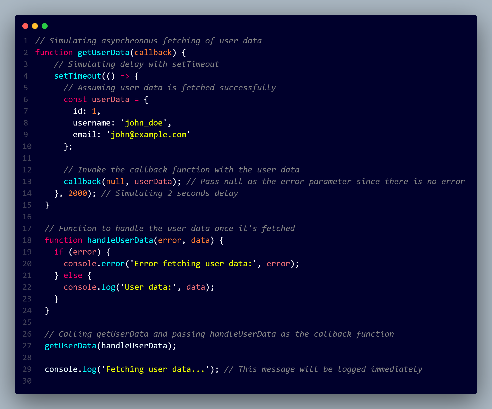

In JavaScript, a callback function is a function that is passed as an argument to another function and is executed after a specific task is completed or when a certain condition is met. Callback functions are commonly used in asynchronous programming, event handling, and in various other scenarios where you need to execute code after some operation has finished.
